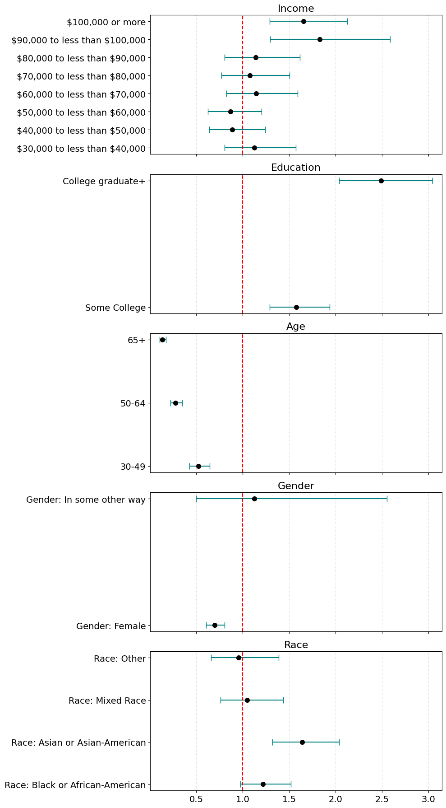
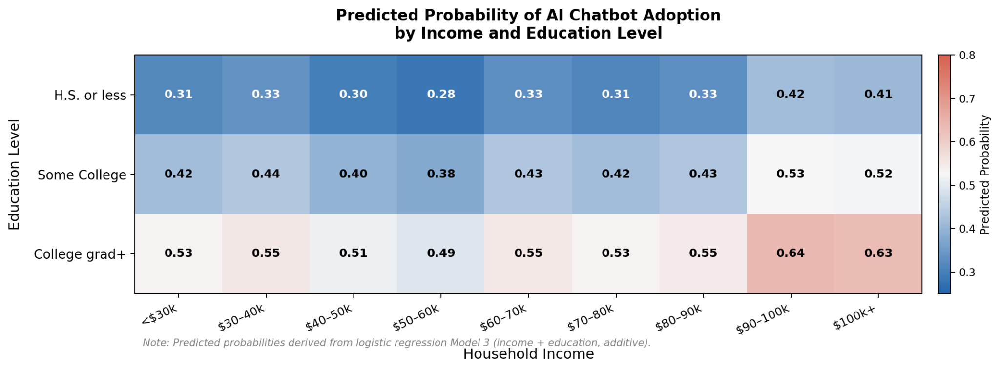

Exploring Income and Education on Use of AI in a Nationally Representative Sample
AI chatbots like ChatGPT and Gemini are quickly becoming part of work, school, and daily life, and early studies link AI use to higher productivity and pay. That raises a question: is AI adoption spread evenly across society, or does it follow existing divides in income and education? As lead author, I worked with Shambhavi Mittal, Yaru (Irene) Su, and Marissa Chemotti to test whether income and education predict AI chatbot use in a nationally representative sample of U.S. adults.
Data and methods
We used Wave 152 of the Pew Research Center’s American Trends Panel, a nationally representative survey of U.S. adults collected in August 2024. After removing refused and missing responses, our sample had 3,796 respondents, evenly split between people who had and had not used an AI chatbot. Our main outcome was whether a respondent had ever used an AI chatbot, and our second outcome was how often they interact with AI.
We fit five nested models for each outcome, logistic regression for chatbot use and linear regression for frequency of use: income only, education only, income and education together, their interaction, and a full model adding age, gender, and race as controls. We compared the models using pseudo-R² or R², AIC, and accuracy.
What predicts AI chatbot use
The full model fit best (pseudo-R² = 0.114, accuracy = 66.5%). Education was the strongest socioeconomic predictor: college graduates had 2.5 times the odds of using an AI chatbot compared with people with a high school education or less (OR = 2.49). Income mattered only at the top. Respondents earning $90,000 or more had 66–83% higher odds of use, while lower brackets did not differ significantly. Age was the strongest predictor overall, with adults 65 and older having 87% lower odds of use than 18- to 29-year-olds. Women had 30% lower odds of use than men.

Income and education together
Predicted adoption rose with both education and income, from 28–33% for people with a high school education or less in the lower income brackets to 63–64% for college graduates earning $90,000 or more. Adding an income × education interaction did not improve model fit, so the two work additively rather than amplifying each other. Frequency of AI use followed the same patterns, with education and age again showing the clearest effects.

Conclusion
Our findings do not support an “AI divide” driven by income alone. Education appears to shape who starts using AI, income matters mainly at higher levels, and age plays the largest role of all. Because the survey is cross-sectional and was collected in 2024, early in mainstream AI adoption, these patterns show associations rather than causes and may change as AI tools become more widely available.